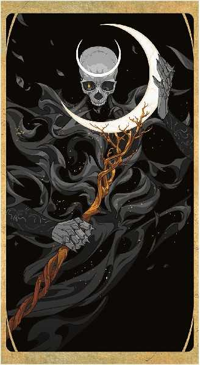

这一章讲述了死惧刑徒——这群亡灵在多元宇宙中寻找着各种形式的万象无常牌，并摧毁他们，徒劳地希望借此结束自己的存在。但随着万象无常牌在多元宇宙中成倍增加，死惧刑徒的目标变得愈发难以实现。然而，这些危险的亡灵仍在多元宇宙中搜寻每一个版本的万象无常牌，并摧毁任何阻挡他们的人或事物。死惧刑徒由各种力量不一的亡灵组成，从幽影和腐肉鸟到暴力与绝望的大君——死惧刑徒可以作为各个等级的战役中的反派，无论其中是否出现了一副万象无常牌。
这一章为地下城主准备，其中描述了死惧刑徒的动机和理念，以及作为这些生物家园的可怖半位面。在本章末尾，还有几个死惧刑徒成员的资料卡。